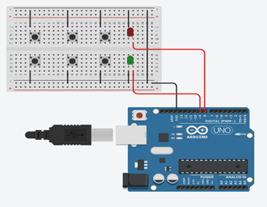
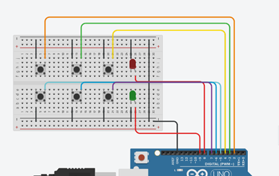
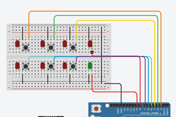

Combinatieslot
In deze project laat ik zien hoe je een combinatieslot kunt maken met een Arduino.
Benodigheden
- Arduino UNO
- Drukknop x6
- Rode x7
- Groene LED
- Jump Wires
- Breadboard
Doel
Het project zal ons helpen om het combinatiewachtwoord in te stellen en u kunt het wachtwoord instellen met behulp van 1-6 cijfers.Wanneer u op de knoppen drukt en de combinatie overeenkomt, gaat de groene LED branden en als de combinatie niet overeenkomt, gaat de rode LED geeft aan dat het wachtwoord onjuist is.
Stappenplan
-
Stap 1 : Breadbord
Verbind de Arduino met een breadbord

-
Stap 2 : Rode & Groene LEDs
Verbind de rode en groene LEDs op pin 9 – 8

-
Stap 3 : Knoppen met Grounding
Verbindt de 6 knoppen met de grounding
 -
Stap 4 : Knoppen met Pins
Verbind de 6 knoppen met de pins 2-7
 -
Stap 5 : De LEDs
Plaats de LEDs op de breadbord
 -
Stap 6 : LEDs met pins
Verbind de LEDs met de pins A0 – A5

-
Stap 7 : Code
Kopieer het code en test het project even uit
Code
const int button1 = 2;
const int button2 = 3;
const int button3 = 4;
const int button4 = 5;
const int button5 = 6;
const int button6 = 7;
const int LED[] = {14,15,16,17,18,19};
const int Red = 8;
const int greenLed = 9;
void checkEntered1(int button);
int code[] = {6,5,5,4,3,2}; // Pin Code
int entered[7];
void setup(){
Serial.begin(9600);
pinMode(button1, INPUT_PULLUP);
pinMode(button2, INPUT_PULLUP);
pinMode(button3, INPUT_PULLUP);
pinMode(button4, INPUT_PULLUP);
pinMode(button5, INPUT_PULLUP);
pinMode(button6, INPUT_PULLUP);
pinMode(Red, OUTPUT);
pinMode(greenLed, OUTPUT);
digitalWrite(Red, LOW);
for (int i = 0; i < 6;i++){ //work through numbers 0-3
Serial.println(code[i]); //print each digit of the code
Serial.println(entered[i]); //print each element
pinMode(LED[i],OUTPUT);
}
}
void loop(){ // Repeat
if (digitalRead(button1) == LOW){
checkEntered1(1); //checkEntered and pass it a 1
delay(250); // wait 0.25
}
else if (digitalRead(button2) == LOW){
checkEntered1(2); //call checkEntered1 and pass it a 2
delay(250); //wait 0.25
}
else if (digitalRead(button3) == LOW){
checkEntered1(3); //call checkEntered1 and pass it a 3
delay(250); //wait 0.25
}
else if (digitalRead(button4) == LOW){
checkEntered1(4); //call checkEntered1 and pass it a 4
delay(250); //wait 0.25
}
else if (digitalRead(button5) == LOW){
checkEntered1(5); //call checkEntered1 and pass it a 4
delay(250); //wait 0.25
}
else if (digitalRead(button6) == LOW){
checkEntered1(6); //call checkEntered1 and pass it a 4
delay(250); //wait 0.25
}
}
void checkEntered1(int button){ //check the first element of the entered[] array
digitalWrite(LED[button-1],HIGH);
if (entered[0] != 0){
checkEntered2(button); //move on to checkEntered2, passing it "button"
}
else if(entered[0] == 0){ //if it is zero, i.e. if it hasn't been defined with a button yet
entered[0] = button; //set the first element as the button that has been pressed
Serial.print("1: ");Serial.println(entered[0]); //for debugging
}
}
void checkEntered2(int button){ //check the second element of the entered[] array
digitalWrite(LED[button-1],HIGH);
if (entered[1] != 0){ //if it is not a zero, i.e. it has already been inputted
checkEntered3(button); //move on to checkEntered3, passing it "button"
}
else if(entered[1] == 0){ //if it is zero, i.e. if it hasn't been defined with a button yet
entered[1] = button; //set the second element as the button that has been pressed
Serial.print("2: ");Serial.println(entered[1]); //for debugging
}
}
void checkEntered3(int button){ //check the third element of the entered[] array
digitalWrite(LED[button-1],HIGH);
if (entered[2] != 0){ //if it is not a zero, i.e. it has already been inputted
checkEntered4(button); //move on to checkEntered4, passing it "button"
}
else if (entered[2] == 0){ //if it is zero, i.e. if it hasn't been defined with a button yet
entered[2] = button; //set the third element as the button that has been pressed
Serial.print("3: ");Serial.println(entered[2]); //for debugging
}
}
void checkEntered4(int button){ //check the third element of the entered[] array
digitalWrite(LED[button-1],HIGH);
if (entered[3] != 0){ //if it is not a zero, i.e. it has already been inputted
checkEntered5(button); //move on to checkEntered4, passing it "button"
}
else if (entered[3] == 0){ //if it is zero, i.e. if it hasn't been defined with a button yet
entered[3] = button; //set the third element as the button that has been pressed
Serial.print("4: ");Serial.println(entered[3]); //for debugging
}
}
void checkEntered5(int button){ //check the third element of the entered[] array
digitalWrite(LED[button-1],HIGH);
if (entered[4] != 0){ //if it is not a zero, i.e. it has already been inputted
checkEntered6(button); //move on to checkEntered4, passing it "button"
}
else if (entered[4] == 0){ //if it is zero, i.e. if it hasn't been defined with a button yet
entered[4] = button; //set the third element as the button that has been pressed
Serial.print("5: ");Serial.println(entered[4]); //for debugging
}
}
void checkEntered6(int button){ //check the fourth element of the entered[] array
digitalWrite(LED[button-1],HIGH);
if (entered[5] == 0){ //if it is zero, i.e. if it hasn't been defined with a button yet
entered[5] = button; //set the final element as the button that has been pressed
Serial.print("6: ");Serial.println(entered[5]); //for debugging
delay(100); //allow time for processing
compareCode(); //call the compareCode function
}
}
void compareCode(){ //checks if the code entered is correct by comparing the code[] array with the entered[] array
for (int i = 0; i<6;i++) {
Serial.println(entered[i]);
}
if ((entered[0]==code[0]) && (entered[1]==code[1]) && (entered[2]==code[2]) && (entered[3]==code[3]) && (entered[4]==code[4])&& (entered[5]==code[5])){ //if all the elements of each array are equal
digitalWrite(Red, LOW);
digitalWrite(greenLed, HIGH);
delay(1000); //wait for a bit
digitalWrite(greenLed, LOW);
for (int i = 0; i < 7; i++){ //this next loop is for debugging
entered[i] = 0;
}
loop();
}
else { //if the code wrong
digitalWrite(Red,HIGH);
delay(1000);
digitalWrite(Red,LOW);
Serial.println("Red OFF");
for (int i = 0; i < 7; i++){ //this next loop is for debugging
entered[i] = 0;
}
}
close_all();
}
void close_all(){
digitalWrite(LED[0],LOW);
digitalWrite(LED[1],LOW);
digitalWrite(LED[2],LOW);
digitalWrite(LED[3],LOW);
digitalWrite(LED[4],LOW);
digitalWrite(LED[5],LOW);
}
- 2 - 6 mei: Idee bedenken en proberen
- 9 - 13 mei: 2de idee bedenken en proberen
- 16 - 20 mei: 2de idee volledig uitwerken tot een prachtige project
- 23 - 27 mei: Word-doc invullen en website maken
Planning
BurndownChart